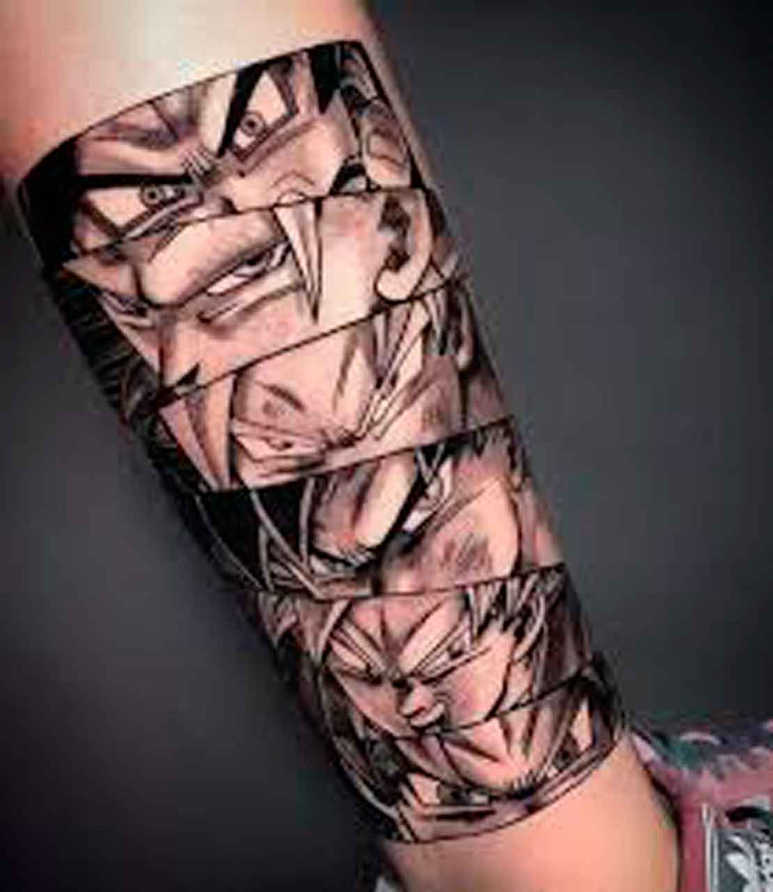

História da Tatto:
Você certamente conhece alguém que tem um desenho gravado na pele. Ou é você que tem uma tattoo? Usadas para marcar um momento importante, fazer uma homenagem ou simplesmente para embelezar o corpo, as tatuagens têm suas origens muito antes de Cristo.
Com o passar do tempo e dos acontecimentos históricos, os estilos de tatuagem foram mudando, assim como o público adepto a carregar esse tipo de arte na pele. Para entender melhor a história da tatuagem, suas influências e suas origens.
Os primeiros registros
O registro mais antigo de uma tatuagem foi descoberto em 1991 no cadáver congelado de um homem da Idade do Cobre. Os restos mortais do homem, que foi apelidado pelos cientistas de “Ötzi”, datam de 3.300 anos antes de Cristo. Em seu corpo foram encontradas diversas linhas na região das costas, tornozelos, punhos, joelhos e pés. Supõe-se que os desenhos tenham sido criados a partir da fricção de carvão em cortes verticais feitos na pele.
Depois de estudar o corpo, exames de raio X revelaram degenerações ósseas ao lado de cada uma das tatuagens. Isso levou os cientistas a acreditar que o povo de Ötzi – que são os ancestrais de parte dos europeus – utilizasse os desenhos como uma espécie de tratamento médico para diminuir a dor. Com o desenvolvimento das civilizações, as tatuagens ganharam outros significados. De acordo com o National Geographic, as mulheres que dançavam nos funerais egípcios por volta de 2000 antes de Cristo tinham os mesmos desenhos abstratos de traços e pontos encontrados em múmias do sexo feminino desse período. Mais tarde, nota-se também o surgimento de tatuagens que representavam Bes, a deusa egípcia da fertilidade e da proteção dos lares.
Galeria
